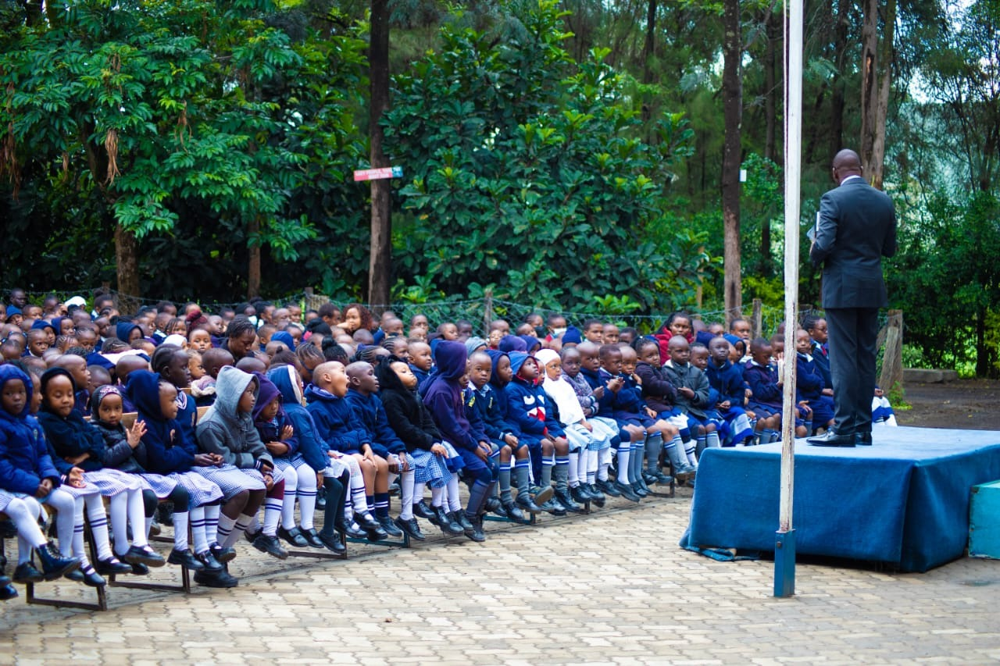
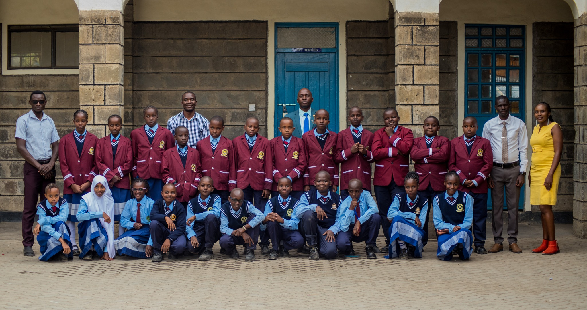

History of King’s Academy of Delivarance Church
King’s Academy was established in 1994 under the visionary leadership of Bishop Dr. Mark Kariuki. As a Christian school dedicated to academic excellence and moral integrity, King’s Academy has become a top-ranking institution in both the municipality and the county. Our school is committed to providing a nurturing environment where students can grow academically, spiritually, and socially.
Curriculum
At King’s Academy, we are proud to follow the Competency-Based Curriculum (CBC). This innovative curriculum focuses on personalized, practical, and holistic education, ensuring that each student’s unique needs, interests, and abilities are met. The CBC framework helps our students develop critical thinking, creativity, communication, and collaboration skills, preparing them for the dynamic challenges of the modern world.
Kings Academy-Nakuru in Kenya offers both boarding and day school options.
For boarding school students,
they live on campus in dormitories, with meals provided by the school and 24/7 supervision. These students have access to evening and weekend extracurricular activities, and benefit from structured study times and academic support.Day school students,
on the other hand, commute daily to and from school. They receive meals at home and are mainly supervised during school hours. This option provides more flexibility, allowing students to spend more time with their families and engage in community activities.